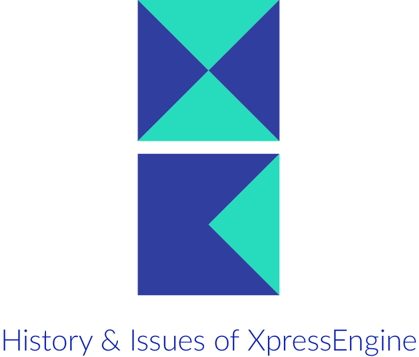
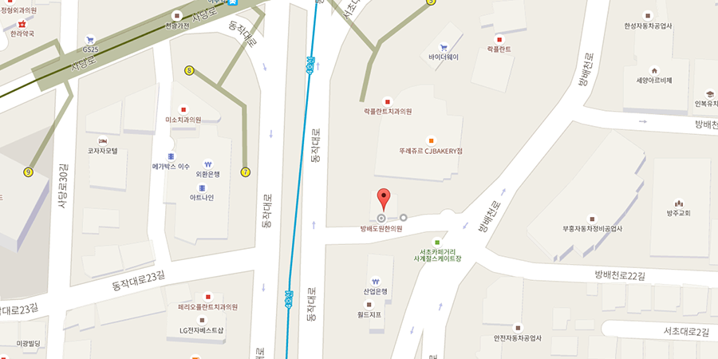

share, future, conviction, research, learn
INDEX
- August 2007
- 오픈프로젝트 그룹 구성
- 다국어 지원 현황
- August 2008
- XpressEngine Core 1.1 발표
- November 2009
- 쉬운설치 도입
- XE 다운로드
- XE 설치
- August 2010
- NHN Deview 2010 참가
- May 2011
- XE 오픈마켓 런칭
- November 2011
- XE Camp 전국투어
- December 2013
- XEHub 개소식
- January 2014
- XE 오픈 오피스 데이 1회
- February 2014
- XE 오픈 세미나 1회
- XE 오픈 세미나 진행 현황
- September 2014
- XE 체험하기 서비스 오픈
- November 2014
- XECon + PHPFest 2014 개최
- December 2014
- 제 4회 XE 공모전
- April 2015
- XEIcon 정식 배포
- October 2015
- XE3 정식 발표
3 Open Project Group
- March 2007
Zeroboard XE 제작 시작 - August 2007
오픈프로젝트 그룹 구성 - Agust 2007
커뮤니티 채널 운영 시작
Open Project Group
초창기 제로보드XE 오픈베타를 시작과 함께 분야별로 오픈 프로젝트 그룹을 구성하였다. 오픈소스 프로젝트 생태계 구성에 시발점으로 손꼽힌다. 28명의 공헌자가 개발자 그룹, 번역그룹, 문서화 그룹, 리포터 그룹에 참여하여 XE개발, 다국어 번역, 매뉴얼 제작, 이슈 관리 등의 역할을 맡았다. 특히 다국어 번역 그룹은 XpressEngine의 다국어 지원 기능에 중추역할을 하였다.
오픈프로젝트 그룹
- 1. 개발자 그룹(Commiter)
개발을 진행하고 소스를 업그레이드하는 그룹 - 2. 번역 그룹 (translator)
다국어 번역이나 지역화에 참여하는 그룹 - 3. 문서화 그룹 (documentation)
매뉴얼이나 컨텐츠 등을 제작, 지원하는 그룹
12 language Support
다국어 지원 현황
한국어 포함 12개의 언어 지원
- Deutsch
- English
- Español
- Français
- Mongolian
- Tiếng Việt
- Türkçe
- Русский
- 中文(中国)
- 中文(臺灣)
- 日本語
- 한국어
v1.1 Dividing Structure
- February 2008
zbXE 정식버전 v1.0.0 발표 - August 2008
XpressEngine 명칭 변경 - August 2008
XpressEngine v1.0.0 배포 - November 2008
2008 NHN Deview 참가
XpressEngine 1.1.0
1.1.0 버전 안내와 함께, 보드의 개념과 상이하여 명칭을 XpressEngine으로 변경하였다.
마이크로 블로그 패키지를 추가 배포하면서 형태별로 나눈 XE Packge와 기능별 모듈을 분리한 XE Modules로 나누어 사용자의 편의성을 높였으며, NHN 오픈UI 기술팀의 합류로 XE 기본 기능과 UI개선 및 고도화하는 작업을 진행하기 시작했다.
XE Packge & XE Module
- 1. XE Package
원하는 형태를 골라 사용할 수 있도록 함. - 2. XE Modules
기능별 모듈을 분리하여 설정할 수 있도록 함.
Easy Installation
- February 2009
XE v1.2.0 배포 - July 2009
프로젝트 저장소 분리 - July 2009
Textyle 배포 - August 2009
2009 NHN DeView 참가 - October 2009
XpressEngine CAMP 개최 - November 2009
XE v1.3, 쉬운설치 도입
쉬운설치 도입
XpressEngine v1.3 배포와 함께 쉬운설치를 도입하여 관리자 페이지에서 프로그램을 직접 설치 적용할 수 있도록 하였다. 쉬운설치 기능 도입으로 개발자는 만든 프로그램을 자유롭게 배포할 수 있게 되었고, 사용자는 배포된 프로그램을 쉽게 쓰고 업데이트 할 수 있게 되었다.
자유배포 생태계 구성
- 1. 프로그램 자유 배포 활성화
개발자가 더 많은 사람들에게 제작한 프로그램을 배포할 수 있다. - 2. 업데이트 용이성
웹 호스팅 업체가 XE 버전 업데이트 관리를 사용자에게 맡길 수 있다. - 3. 유지보수 비용 감소
XE 기반 홈페이지 제작업체의 유지보수가 더욱 편리해졌다. - 4. 디자인 활용도 증가
디자이너가 만든 스킨과 레이아웃이 더 많은 곳에서 쓰여질 수 있다.
1,480,000 download
XE Download
연도별 월평균 다운로드 & 쉬운설치
- 2009 5,751/mo
- 2010 20,352/mo
- 2011 13,802/mo
- 2012 19,200/mo
- 2013 16,638/mo
- 2014 20,327/mo
- 2015 23,092/mo
413,800 installing
XE Installation
연도별 월평균
- 2008 1,746.3
- 2009 2,726.8
- 2010 5,937.0
- 2011 5,275.2
- 2012 5,960.8
- 2013 5,319.3
- 2014 5,710.2
- 2015 5,813.7
- * 2008.7 ~ 2015. 4.17 누적: 413,783개 도메인 설치
- * 도메인별로 1/1으로 중복되지 않은 수
- * 2008년: 7월부터 6개월간 데이터
- * 2015년: 1~3월까지의 데이터 + 4월분 day 기준
DEVIEW
- January 2010
제1회 XE 공모전 개최 - January 2010
XE Core 1.4 배포 - March 2010
Syndication 모듈 배포 - August 2010
NHN DEVIEW 2010 참가
DEVIEW 2010
XpressEngine은 2008년부터 매년 DEVIEW에 참가하고 있다. 특히 2010년 NHN DEVIEW 참가는 NHN의 기술/정보 공개를 통한 독립 사이트 활성화를 꾀한 데 의의가 있다.
DEVIEW 2015DEVIEW 2010 발표자료
XE Market
- January 2010
제2회 XE 공모전 개최 - May 2011
XE 오픈마켓 런칭 - May 2011
XE 프로젝트 호스팅 이전 및 종료 - October 2011
XpressEngine 1.5 배포
4 areas nationwide tour
- November 2011
XE Camp 전국투어 - January 2012
Core commit 10000건 돌파 - April 2012
XE Core 1.6 배포 - August 2012
제 3회 XE 공모전(취소)
XE Camp
XE Camp는 XE개발자와 사용자가 만나 지식을 나누고 인맥을 교류하는 자리로 마련되었다. 2011 XE 캠프는 지방 사용자의 편의를 위해 전국 4개 지역(대구, 광주, 대전, 분당)에서 개최되었다. 이후에 XE Camp는 2014년부터 진행하는 XECon으로 명칭을 바꾸며 국내 최대 규모의 PHP 컨퍼런스로 발전되었다.
XE 캠프 2011 개요
- 1. 장소 및 일정
대구(11/05), 광주(11/12), 대전(11/19), 분당(11.26) - 2. 참여자 수
총 465. 대구(55), 광주(100), 대전(60), 분당(250) - 3. 발표자 및 세션
명 발표자, 6개 세션
XE Hub
- March 2013
XE Core 1.7 배포 - November 2013
프로젝트 저장소 GitHub 이전 - December 2013
XEHub 개소식
XE Hub
2013년 12월 6일 오픈소스 커미터를 위한 개발 전용 공간인 XEHub를 오픈하였다. XE 커뮤니티에서 활약해 온 오픈소스 개발자 3명이 XE 커미터로서 XE Core를 전담 개발하고, 커뮤니티 운영을 도맡았다. 2015년 장소를 이전하여 더 왕성한 XE오픈오피스데이, 오픈세미나 등의 행사를 XEHub에서 진행하고 있다.
About XEHubXEHub Facebook
XE Open Office Day
- January 2014
XE 오픈 오피스 데이 1회
XE Open Office Day
XEHub에서 진행하는 소규모 세미나 또는 간담회 형식의 이벤트이다. 월 1회 가량 날짜를 정해 공지하고 있으며, XEHub에서 직접 개발을 진행하거나 XE 커뮤니티 개발 그룹의 조언이나 의견을 자유롭게 교환할 수 있다.
About XE Open Office DayXE Open Seminar
- February 2014
XE 오픈 세미나 1회 - May 2014
XE 마켓 허브 오픈
XE Open Seminar
XE 개발에 관한 정보와 지식을 공유하기 위한 공개 세미나이다. 다양한 주제와 난이도로 XE 개발 입문부터 심층적인 내용까지 다양하게 진행하고 있다. 2015년부터 XEHub에서 매주 수요일 진행하고 있다.
About XE Open Seminar314 attendant / 20 times / 10 topics (based on 2014.02.22 ~ 2015.05.27)
XE Open Seminar
XE 오픈세미나 현황 테이블
| 회차 | 주제 | 참석(참석율) |
|---|---|---|
| 1st | XE 1.7.4 변화 | 23(82%) |
| 2nd | 애드온 강좌 1차 | 6(67%) |
| 3rd | 애드온 강좌 2차 | 7(58%) |
| 4th | XE구조 | 15(71%) |
| 5th | 모듈 개발 1/3 | 23(82%) |
| 6th | 모듈 개발 2/3 | 7(70%) |
| 7th | 모듈 개발 3/3 | 8(100%) |
| 8th | 레이아웃 제작 노하우 | 18(90%) |
| 9th | 반응형 레이아웃 제작 노하우 | 17(89%) |
| 10th | Tools for PHP | 23(92%) |
| 11th | Composer 완전정복 1차 | 12(92%) |
| 12th | Composer 완전정복 2차 | 10(100%) |
| 13th | Composer 완전정복 3차 | 9(90%) |
| 14th | Composer 완전정복 4차 | 10(100%) |
| 15th | Testing in PHP 1차 | 20(90%) |
| 16th | Testing in PHP 2차 | 23(96%) |
| 17th | Testing in PHP 3차 | 26(100%) |
| 18th | Testing in PHP 4차 | 18(95%) |
| 19th | Laravel 따라하기 1차 | 29(100%) |
| 20th | Laravel 따라하기 2차 | 27(100%) |
Cumulative 20,000+ & 100 daily
- September 2014
XE 체험하기 서비스 오픈
XE Demo
XpressEngine 공식사이트에서는 XE를 설치하기 전 직접 체험해볼 수 있는 XE 체험하기 서비스를 2014년 09월에 오픈하였다.
XE 체험하기 서비스는 서버 세팅이나 호스팅 서비스를 이용하지 않고 미리 체험해볼 수 있는 서비스로, 관리페이지를 비롯한 모든 기능을 제한없이 체험해볼 수 있다. 각자에게 별도로 사이트가 생성되므로 동시 접속자의 간섭 없이 모든 기능을 살펴보고 자료실에 등록된 프로그램과 스킨을 미리 설치하여 사용해볼 수 있다.
2015년 05월 29일 기준, 누적 2만건이 넘었으며 하루 평균 100명 이상 사용, 월 4천명 이상이 체험하기 서비스를 이용하고 있는 것으로 나타났다.
XE 체험하기 서비스350 attendees / 3 track & 15 session
- November 2014
XECon + PHPFest 2014 개최
XECon + PHPFest
오픈소스 프로젝트 XpressEngine과 PHP관련 기술 및 지식을 공유하고 나눌 수 있는 행사로, XECon(구 XE Camp)와 국내 가장 큰 PHP 컨퍼런스인 PHPFest가 만나 하나의 큰 행사로 자리매김하였다.
행사내용
3개의 트랙과 15개의 세션으로 구성된 2014년 XECon+PHPFest에는 600여명이 신청하였고 350명이 참석하였다. XE에 관해서는 XpressEngine을 이용하여 사이트를 구축하고 확장 방법부터 XpressEngine을 활용하는 다양한 방법으로 구성하였다. 그 외 PHP 어플리케이션의 최적화 기법, PHP 소프트웨어의 품질을 크게 향상시킬 수 있는 방법을 비롯한 여러 웹 서비스 기술을 공유하였다.
XECon + PHPFest 20144th XEContest Record
- November 2014
XECon + PHPFest 2014 개최 - February 2015
XEHub 이전
4th XE Contest
XE 공모전은 웹 생태계 발전에 힘써 온 오픈소스 프로젝트 Xpress Engine의 프로젝트 활성화를 도모하고 함께 성장할 수 있는 기회를 만들고자 개최되었다. 제 4회 XE공모전은 2014년 11월부터 2015년 1월까지 공모접수를 진행하였고 2015년 2월 XEHub 이전 오픈식과 함께 수상발표를 하였다.
공모전 개요
5개 공모부문으로 나누어 진행되었고, 28명의 개발자가 참여하여 47개의 작품이 출품되면서 지난 공모전 중 최다 참여 수를 기록하였다.
XE Contest 2014XE Core 1.8 & 680 Pictographic Icons of XEIcon
- March 2015
Composer 한글 매뉴얼 공개 - April 2015
XEIcon 1.0.4 정식 배포 - April 2015
XE Core 1.8 배포 - April 2015
Laravel 한글 매뉴얼 공개
XEIcon Release
XEIcon은 웹사이트 제작에 최적화된 680개의 백터 그래픽 아이콘 툴킷이다. 한국 웹문화에 최적화된 아이콘을 제공하며, 다양한 편의기능을 탑재하고 있다. 제4회 XE공모전에 베타버전을 제공한 XEIcon은 XE Core 1.8 배포와 함께, 개선된 버전으로 정식 서비스를 오픈하고, XE Core에 정식 내장하였다.
XEIcon homepageXEIcon Github
XpressEngine 3
- November 2015
XE3 정식 배포 - November 2015
XECon 2015
XpressEngine 3
XprssEngine은 버전 1의 한계를 극복하고 새로운 형태의 CMS를 제공하고자 XpressEngine 3를 제작하고 있다. XE3는 플러그인 구조로서 다양한 구조가 event로 연결되어 기능을 확장해 나가는 형태로서 XE1의 블럭식 모듈구조와 구분된다.
It’s time to change
- The New Generation of CMS
- Modern PHP 기술 적용
- Dynamic Columns
- 회원, 컨텐츠, 그룹, 권한, 파일 등 관리 기능 제공
XE Event
XprssEngine은 다양한 개발에 대한 정보와 지식을 공유하고, 같이 성장해나가기 위해 다양한 행사를 진행하고 있다.
XE Open SeminarXE Open Office Day
XE Con
XE Contest
-
Community Developers
-
Contributors
109 Contributors
adrian.vasile.constantin, aerofleet, Ahn Kae-Seong, AJKJ, akasima, andjfrrk, andreimarin, araste, Baek, Beom Jinhyeok, BJRambo, bnu, bradly1, buffkj, c2joy, canto, cbrghost, ccata17, ChanMyeong, ChaYoung You, Cheun Young Jin, chinaskyking, chschy, clench, devdho, devflow, devjin, dionisrom, dorami, dragan-dan, ducduydaovn, duvent, Eundong, findstar, florinutz, flourscent, flyskyko, FruitsHake, Gary Lee, guny, Han Gyeongsu, haneul, hankm2004, haojilin, heemin, hhgyu, ikko, izuzero, Jaedong Kim, jdssem, jhyeon1010, Jin Hu, johnsonshu, Jonghwan Hyeon, juanlee0, k10206, kagami, khongchi, Kijin Sung, KissToXE, Lansi, largeden, LI-NA, liahona, lickawtl, mayoojin, mglclub, misol, mmx900, mog422, mooo, mosmartin, nagoon97, ngleader, nicetwo, ovclas, risapapa, rokmcssu, royallin, rubyeye, ryin005, ryush00, sanghunjun, sejin7940, sergeiten, SMaker, sol, Solid0, soonjae, sspa3141, Stellar, supershop, taggon, ucorina, unryong, upgle, venister, wdlee91, welcomeju, whantae ji, Xvezda, YJSoft, ysnglee2000, zero, 숭숭군, 이온디, 조성수, 퍼니엑스이, 푸시아
-
Location
XEHUB
서울특별시 서초구 동작대로 90. 순영빌딩 3층 (방배동 3005)
 -
Sources
- https://www.xpressengine.com/devlog
- http://taegon.kim/archives/2408
- http://bit.ly/1bvqLGs
- http://bit.ly/1EvW0wf
- ttp://bit.ly/1DBgY92
- http://naver_diary.blog.me/150181424045
- http://bit.ly/1JuUgXd
- https://www.facebook.com/naverd2/photos_stream
- http://blog.naver.com/deview_con
- https://www.xpressengine.com/forum/22557720
- http://deview.naver.com
- https://www.xpressengine.com/event
- http://bit.ly/1diZ5pm
- http://demo.xpressengine.com/
- https://www.xpressengine.com/devlog/18429157
- https://xecon2014.xpressengine.com/
- http://deview.naver.com/files/2010/D2.pdf
- http://contest.xpressengine.com/
- http://bit.ly/1J2LlZH
- https://github.com/xpressengine/XEIcon
- http://bit.ly/1GnRr3Y
- https://github.com/xpressengine/xe-core
- https://ko.wikipedia.org/wiki/XpressEngine